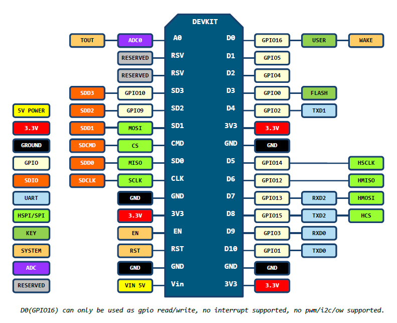
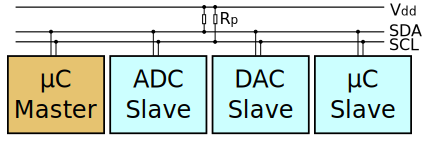

La serpiente y el cerdito üêç üê∑
Clara Casas Castedo & Miguel Sánchez de León Peque
2019-01-17
El cerdito üê∑
Coink
Necesitaremos …

La serpiente üêç
Micropython

NodeMCU

I2C

Cableado
| NodeMCU pin | Magnetic sensor pin |
|---|---|
| D1 (GPIO5) | SDA (P2.10) |
| D2 (GPIO4) | SCL (P2.11) |
| 3V3 | 3V3 (P1.0) |
| GND | GND |
Código
from machine import I2C
from machine import Pin
i2c = I2C(scl=Pin(5), sda=Pin(4), freq=400000)
devices = i2c.scan()
address = devices[0]
i2c.writeto(address, b'123') # Write 3 bytes
i2c.readfrom(address, 4) # Read 4 bytes
i2c.readfrom_mem(address, 8, 3) # Read 3 bytes at address 8
i2c.writeto_mem(address, 2, b'\x10') # Write 1 byte at address 2Hojas de especificaciones
Código final
WiFi y HTTP üòç
Captura de datos del sensor
- tiempo total 1 segundo de datos
- 1000 lecturas por segundo
- sensor 3D con dimensiones x, y, z y tiempo
Manejo eficiente de memoria -> buffers + ‘array’
Memoria vs tiempo de ejecución
Buffer circular, la solución definitiva
Analizando monedas
Características

Diferenciación (min)

Diferenciación (d0)

Diferenciación (l0)
La nube con Flask ☁️
ThingSpeak
[data, time] = thingSpeakRead(516536, 'Fields', [1], 'NumDays', 7);
data = timetable(time, data)
data = retime(data, 'daily', 'sum')
bar(data.time, data.Variables, 'FaceColor', [1 .5 0])
¡Eso es todo! üéâ
Fuentes
- Código: github.com/CojoCompany/coink
- Documentación: coink.readthedocs.io
- Presentación: cojocompany.github.io/PythonVigo-2019-Coink/